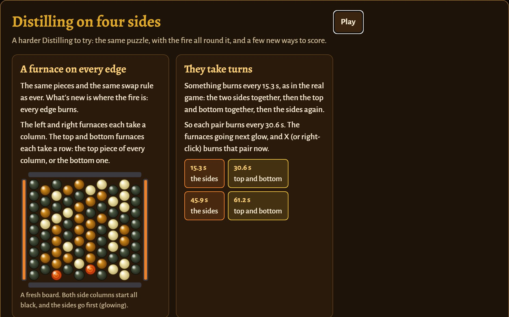

Why a harder Distilling
For a good distiller, Crystal Clear 12 comes round again and again. There's one way to play it: bank your whites, store the junk in the corners away from the fire, then build a long chain, the same steps every board. Once you know them, nothing sets one good distiller apart from another, and what's left is the luck of what spawns.
This version is there to bring in more tactics: the same pieces and the same swap rule, but a board where you have to think about what you're doing, every burn.